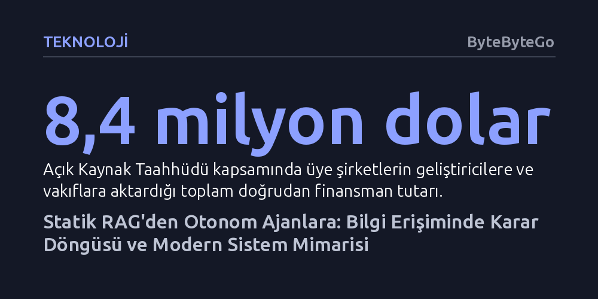

TEKNOLOJI · ByteByteGo · 2026-10-25
Geleneksel RAG sabit bir getirme akışına mahkûmken, ajan tabanlı RAG toplanan bilginin yeterliliğini kendi denetleyip strateji değiştirerek çok daha isabetli sonuçlar üretiyor. Sistem mimarisinde ise kimlik (OIDC) ile yetkiyi (OAuth 2.0) ayrıştırmak ve açık kaynak altyapısını sürdürülebilir kılmak kritik önem taşıyor.
Yapay zekâ sistemlerinin tek adımlı arama kalıplarını terk edip kendi bilgi toplama sürecini denetleyen otonom ajanlara dönüşmesi, geliştiricilerin veri getirme, kimlik yönetimi ve sunucu mimarilerini baştan tasarlamasını zorunlu kılıyor.

Geleneksel RAG (Retrieval-Augmented Generation) mimarisi, büyük dil modellerini harici verilerle beslemek için doğrusal ve statik bir hat izler. Bu standart akışta kullanıcının sorgusu alınır, bir bilgi tabanından ilgili metin parçacıkları getirilir ve model bu parçaları bağlam kabul ederek yanıt üretir. Ancak bu sürecin başarısı tamamen ilk etapta getirilen metinlerin isabetine bağımlıdır; veritabanından çekilen bağlam eksik veya yetersiz olduğunda sistemin bunu fark edip düzeltecek bir iç mekanizması yoktur.
Ajan tabanlı RAG (Agentic RAG) yaklaşımı ise veri getirme sürecini pasif bir aktarımdan dinamik bir muhakeme döngüsüne dönüştürür. Sistem yalnızca belgelerle sınırlı kalmayıp API'ler, ilişkisel veritabanları veya web araması gibi çeşitli araçları otonom olarak devreye sokar. Sürecin kalbinde, toplanan kanıtların görevi tamamlamak için yeterli olup olmadığını denetleyen bir kontrol adımı yer alır.
Eğer toplanan bağlam yetersiz görülürse ajan duruma müdahale eder; arama parametrelerini günceller veya bütünüyle farklı bir bilgi getirme aracına başvurur. Kanıtların tatmin edici olduğu teyit edildikten sonra büyük dil modeli nihai yanıtı sentezler. Böylece sistem, ilk bulduğu veriye körü körüne güvenmek yerine kendi adımlarını denetleyen dayanıklı bir araştırmacı kimliği kazanır.
Modern bulut servislerinin birbiriyle güvenli biçimde konuşması, üçüncü taraf uygulamalara kullanıcı parolalarını ifşa etmeden kaynak erişimi tanımlamayı gerektirir. Örneğin Slack içerisinden Google Takvim etkinliklerinize erişmek istediğinizde, Google kullanıcı adınızı ve parolanızı Slack ile paylaşmak kabul edilemez bir güvenlik zaafı yaratır. OAuth 2.0 protokolü, uygulamanın kimlik bilgilerinizi öğrenmeksizin sizin adınıza korunan bir kaynağa erişmesini sağlayarak bu sorunu çözer.
OAuth 2.0 temelinde bir yetkilendirme (authorization) protokolüdür. Kullanıcıyı doğrudan ana platformun doğrulama sunucusuna yönlendirir, orada verilen iznin ardından üçüncü taraf uygulamaya yalnızca belirli kaynaklara erişim hakkı veren bir yetki belirteci (access token) iletir. Ancak bu akış, kapıyı açanın gerçekte hangi kullanıcı olduğunu teyit etmez; yalnızca belirli bir kaynağa erişim yetkisinin bulunduğunu belgeler.
Kullanıcının kimliğini kesin olarak doğrulamak (authentication) gerektiğinde ise OAuth 2.0 üzerine kurulan OIDC (OpenID Connect) katmanı devreye girer. Mimari ayrımı özetleyen temel yaklaşımla, "OAuth neye dokunma izniniz olduğunu, OIDC ise kim olduğunuzu yanıtlar." OIDC, yetki belirtecinin yanına dijital olarak imzalanmış bir JWT (id_token) ekleyerek oturum açan kişinin somut kimliğini sisteme güvenli biçimde bildirir.
Geliştirilen yapay zekâ boru hatlarının ve sunucu uygulamalarının üzerinde çalıştığı Linux ortamı, kök dizin ("/") ile başlayan kesin bir hiyerarşik yapıya sahiptir. Çekirdek imajı ve önyükleyici dosyaları "boot" dizininde, sabit disk bölümleri ile aygıt tanımlayıcıları "dev" altında toplanır. Temel sistem komutları "bin" klasöründe yer alırken, kullanıcı yazılımları ve kütüphaneler "usr" ile "lib" dizinlerinde barındırılır.
Sistemin kararlı çalışması, statik yapılandırmalar ile dinamik verilerin ayrıştırılmasına dayanır. Sistemin genel ayarları "etc" klasöründe saklanırken, çalışma esnasında boyutu sürekli değişen günlük kayıtları (loglar) "var" dizininde tutulur. Harici depolama birimleri geçici olarak "media" dizinine bağlanır; her kullanıcının bağımsız çalışma alanı ise "home" altında yalıtılır. Bu düzenli ayrım, servislerin çökmesini engelleyen izolasyonun temelini oluşturur.
Yapay zekâ altyapılarından işletim sistemlerine kadar endüstrinin üzerinde yükseldiği temel yazılım katmanları, büyük ölçüde açık kaynak kütüphaneler ve bunların arkasındaki gönüllü geliştiriciler sayesinde ayakta kalmaktadır. Ancak küresel teknoloji sektörü bu kütüphaneler üzerinden milyarlarca dolarlık katma değer üretirken, projeleri sırtlayan geliştiricilerin finansal olarak yalnız bırakılması ciddi bir sürdürülebilirlik açmazı doğurmaktadır.
Bu dengesizliği gidermek üzere kurulan Açık Kaynak Taahhüdü (Open Source Pledge), şirketlerin bakım sorumlularına düzenli fon sağlamasını bir sektör normu haline getirmeyi hedeflemektedir. İki yıl gibi kısa bir sürede 37 şirketin toplamda 8,4 milyon dolarlık doğrudan katkı sağlaması, açık kaynak geliştiriciliğinin bir lütuf değil, kurumsal sistemlerin hayati bir bakım maliyeti olarak kabul edilmeye başlandığını kanıtlamaktadır.